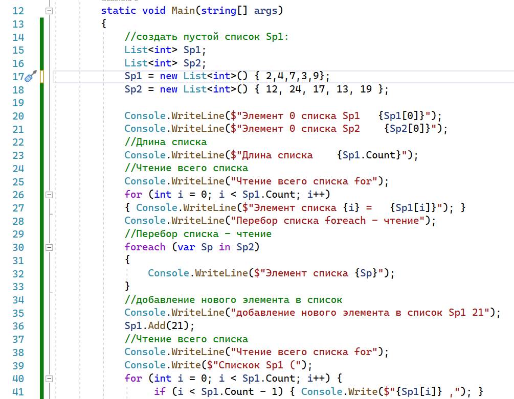
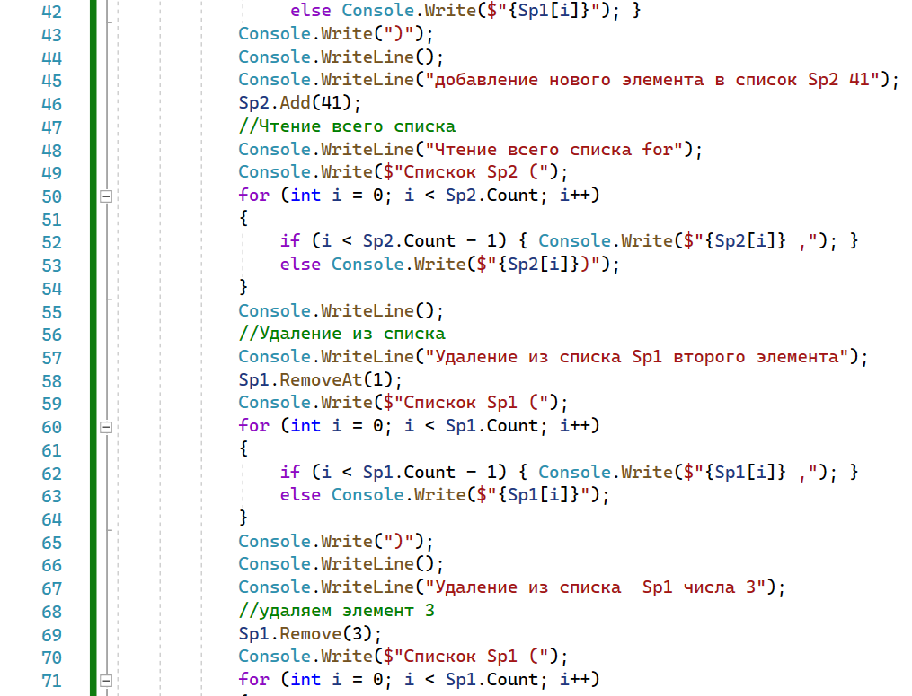
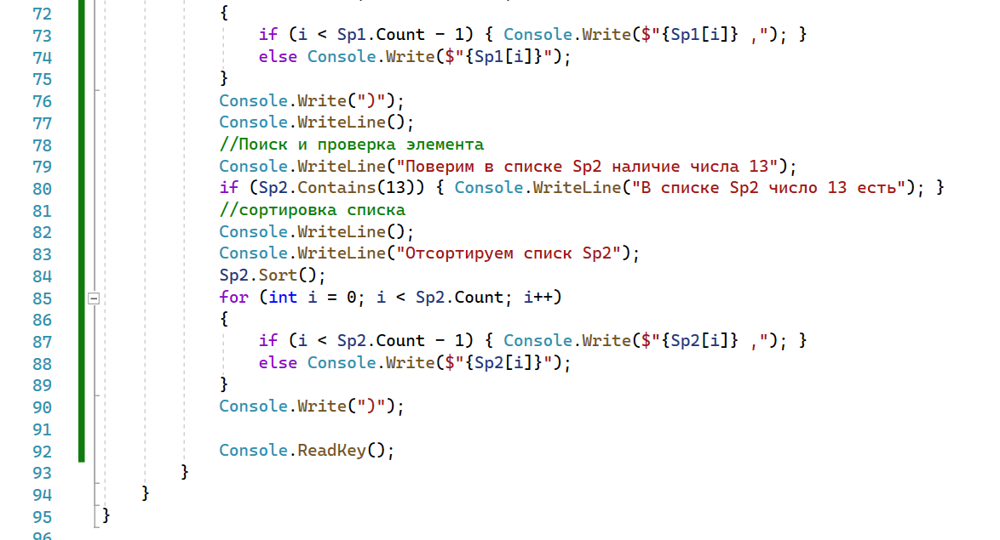
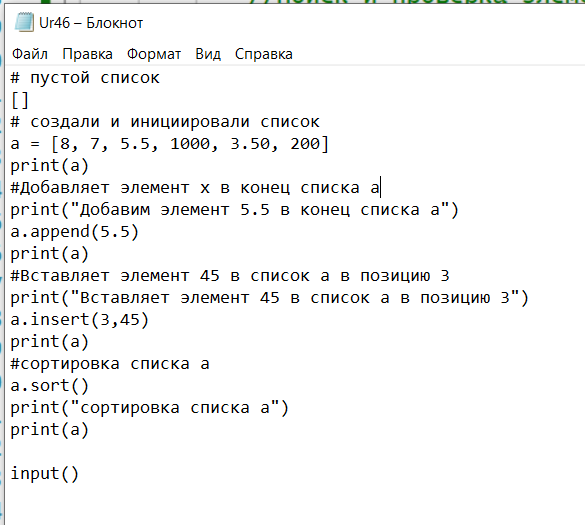

|
Использование списков
Работа в классе



Работа с списками в Python

Самостоятельная работа
- Напишите
программу на C# для суммирования всех элементов в списке. (создать
два списка по 5 элементов, для хранения целых чисел)
- Напишите
программу на C#, чтобы умножить все элементы в списке.
- Напишите
программу на C#, чтобы получить наибольшее число из списка.
- Напишите
программу на C#, чтобы получить наименьшее число из списка.
- Напишите
программу на Python для суммирования всех элементов в
списке. (создать два списка по 5 элементов, для
хранения целых чисел)
- Напишите
программу на Python, чтобы умножить все элементы в списке.
- Напишите
программу на Python, чтобы получить наибольшее число из
списка.
- Напишите
программу на Python, чтобы получить наименьшее число из
списка.
|